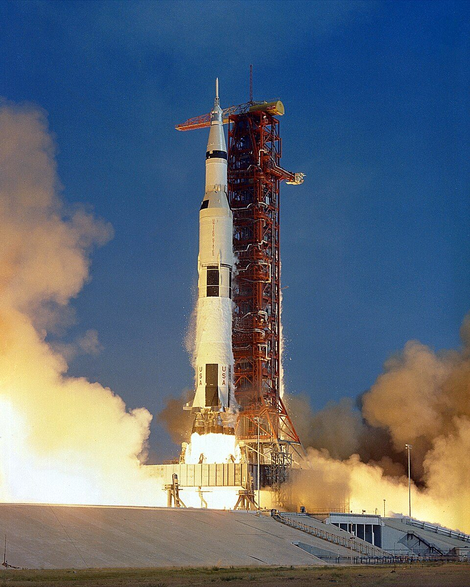
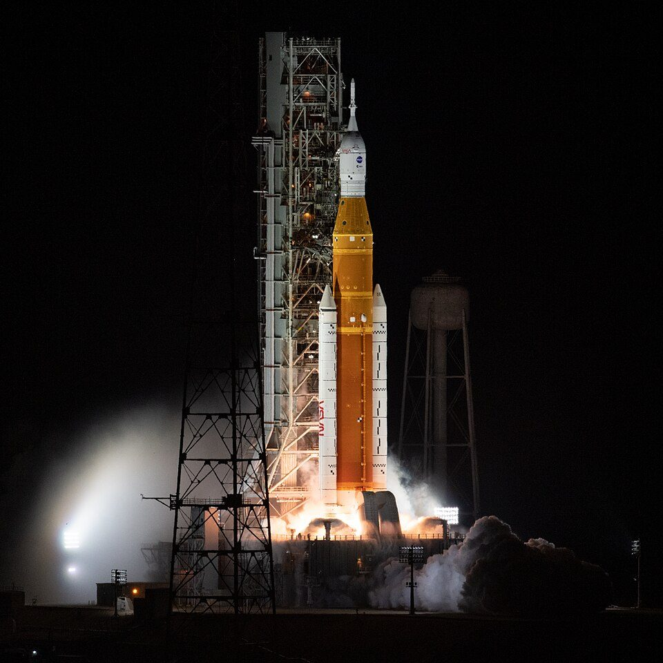

Apollo and the return to the Moon
Twelve people have walked on the Moon, all between 1969 and 1972. With Artemis, humanity is getting ready to return.


NASA's Apollo programme is probably the greatest technical feat of the 20th century. At its height it employed 400,000 people and cost the equivalent of more than 250 billion of today's dollars.
The most powerful rocket of its time
The Saturn V stood 110 metres tall, more than the Statue of Liberty, and weighed 2,900 tonnes at lift-off. Its five main engines burned 13 tonnes of fuel per second. It flew 13 times and never lost a payload.


Apollo 11: "One small step"
On 20 July 1969 the lunar module Eagle touched down in the Sea of Tranquillity with Neil Armstrong and Buzz Aldrin, while Michael Collins waited in orbit. They landed with less than a minute of reserve fuel: Armstrong had to fly by hand to avoid a boulder field. Some 600 million people, a fifth of humanity, watched live on television. Armstrong said: "That's one small step for man, one giant leap for mankind."
They spent about two and a half hours outside, collected 21.5 kg of rocks, planted a flag and left a seismometer and a laser reflector that is still used to measure the distance to the Moon to within millimetres.
All the lunar missions
| Mission | Year | Highlight |
|---|---|---|
| Apollo 8 | 1968 | First humans to orbit the Moon; "Earthrise" photo |
| Apollo 11 | 1969 | First landing |
| Apollo 12 | 1969 | Precision landing beside the Surveyor 3 probe |
| Apollo 13 | 1970 | Oxygen tank explosion; miraculous return |
| Apollo 14 | 1971 | Alan Shepard hits two golf balls |
| Apollo 15, 16, 17 | 1971–1972 | Lunar Roving Vehicle; stays of up to 3 days |
In all, 12 astronauts walked on the Moon and brought back 382 kg of samples. The last, Gene Cernan, left in December 1972. No one has been back since.
"Houston, we've had a problem"
In April 1970 an oxygen tank explosion left Apollo 13 without power on its way to the Moon. The three astronauts used the lunar module as a lifeboat and, following instructions from the ground, improvised a carbon dioxide filter from cardboard, plastic bags and duct tape. They came home safely. It became known as "the successful failure".
Artemis: the return
NASA's Artemis programme, with the European Space Agency taking part, aims to go back to the Moon to stay. Artemis I (2022) flew uncrewed. In April 2026, Artemis II took four astronauts around the Moon: the first people to travel beyond Earth orbit since 1972, including the first woman and the first Black astronaut on a lunar voyage. Artemis III is due to put people back on the surface near the south pole, where water ice lies in permanently shadowed craters. The Orion spacecraft uses a service module built in Europe.

.jpg){kind=link}
China is also moving forward: its Chang'e probes have brought back samples from the far side of the Moon (2024), and it plans to send astronauts before 2030.
Videos to understand it better
- How We Are Going to the Moon - 4KNASA · 11.9M views
- How the Apollo Spacecraft works: Part 1Jared Owen · 5M views
Videos are from YouTube and belong to their creators. They only load when you click them. See all videos →